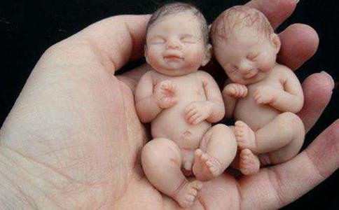

可怜的婴灵例证之一 来自香港的郑国红，年轻的时候曾经因为无知而
她自己本人也曾经堕胎两次，当时她还没有
郑女士育有一子一女，儿子九岁，女儿十九岁，两个孩子经常吵架，而且吵架时，对于母亲的教导置若罔闻。偶而孩子不吵架，父亲就会在回家的时候骂家人。这位父亲在发火之后，自己也觉得莫名其妙，曾问妻子：「为什么我一回到家就想发火？」
此外，郑女士自从剖腹产生了儿子之后，每个月的痛经会非常严重，子宫胀得像要裂开一样，痛得生不如死。学佛之后，她试着用意念与婴灵沟通，当认错后，痛经消失了。但是她知道孩子们还没有得到
郑女士指出，孩子们时时都在我们身边。他们因为受了太多的苦、太多的委屈而常常哭泣。所以曾经堕胎的女士，要拿出真正的母爱，关心怜爱孩子们，并且要努力积功累德，真诚忏悔才能超度婴灵，让他们不再受苦。
当她终于有勇气上台发露忏悔的时候，就收到有缘众生的讯息，让她转告大众：「不要认为做了错事就不用受到果报。」做了错事，就要有胆量认错、改过。她告诫大家，我们往往不见棺材不掉泪，做了错事还心存侥幸，这是很可怕的心理，因为等到果报真来了的时候，就悔之不及了，她引用师父上人的开示：「只有真忏悔、真改过、真
郑女士以自己的经历以及所见所闻，敬劝所有的堕胎妈妈，必须要至诚忏悔，后不再造，发心修行。我们身边处处都是神灵，有缘众生无处不在。所以，一定要用真诚心去真修，扎好三个根与佛相应，真心感动他们才可以。
她看到被遗弃的孩子们就在身边，他们常常哭泣，真的是很心酸、很委屈。同时，如果妈妈真心认错、改过，孩子们也会很感动，就不再报复妈妈。相反，如果母亲不知真心忏悔改过，对婴灵的存在不闻不问，母亲的这种心态，对于婴灵来说是雪上加霜，令他们的怨恨更加无法化解。因此，深受委屈、无处哭诉的小婴灵，当他们看到妈妈不肯认错、不当回事的时候，她们会因
农民家庭出身的周水珍，年轻的时候曾经因为不想被孩子拖累而堕胎。她的报应来得很快：尚未中年就身患重病，婴灵到家中报复父母。周女士病重期间，曾经亲眼看到堕胎妇女在地狱受报的可怕情形。现在特别将她的经历汇报如下，希望大家引以为戒，彼此共勉！
周女士当年和先生结婚后，先生在香港，她在大陆。结婚不久她即怀孕了，但是她害怕小孩不能和她一同去香港团聚，也因为自己贪玩，不想被孩子拖累，就狠心堕胎了。
后来，她在香港定居两年后，大女儿出世。周女士发现女儿很难照顾，每晚大吵大闹，只睡两小时。她初为人母，没有经验也没有帮手，因而非常辛苦。可见，因为贪玩而随便堕胎，报应就是自己倍加辛苦。
如此辛苦地照顾孩子，周女士开始精神
后来，周女士的先生很少回家，而且在外面有了女朋友。这个消息让她受到很大的打击，想以「安乐死」来结束自己的生命。她回想自己那段时间的
如此过了几年「人间地狱」的生活，周女士便真的看到地狱了。她在二００九年突然大出血，腰痛得非常厉害，诊断为肾结石。半年后，她突然腰背剧痛，如同被锋刀利剑刺穿。医生诊断是「肾积水、肾肿」，立即施行了手术治疗。周女士说自己在手术后痛得死去活来，病重时刻，她亲眼看到了地狱的情形——
「地狱非常黑暗，感觉有很多人在受苦。我看到一个女人正在接受铡刀刑罚，那个铡刀将她的身体切成一段一段的。我怕得毛孔竖起，不敢久视。」
就在这一刻，周女士明白自己的病是
二０一０年十二月，被周女士堕胎的婴灵终于找到了父母，要父母给她道歉。她说——
「一天晚上，十二点的时候，我看见一位男性众生，带着一位女孩进入我家。那个女孩子十多岁，睡在我大女儿身边。接着，大女儿手脚就一直在动。我看是异相，当下出声念了一千句『大慈大悲
第二天早上，周女士的两个女儿都发高烧了。晚上的时候，她就和那位女孩子沟通。女孩子说：「我是要找爸爸。」她这才明白，孩子就是当年被她堕胎的婴灵。婴灵对周女士说：「我现在很苦，没住处、没衣穿、很冻、很穷。你们很好，我不会放过你们。」作为母亲，看到孩子这样苦、怨气这么大，感到非常痛心。周女士就立刻对孩子认错说：「对不起，因过去没学佛。自私杀害了你，罪重难舍，让你不甘愿是应该的。我向你忏悔，请求你原谅我。现在唯一救我母子的办法，只有好好念佛求生
然而，可能是周女士的真诚心不够，给孩子开示极乐世界，孩子不能接受，不仅不理她，还向她吐口水。这时，她对孩子说：「妈妈抱你。」她就这样抱着孩子，让孩子一起念佛，孩子才勉强应付了。
后来，周女士再用真诚心和孩子沟通。孩子终于说道：「你们吃很好、住很好。要求爸爸给我叩头三拜！」爸爸虽然也照做了，但是不够真诚心。接着，到了凌晨三点至五点之间，家里计算机就突然开了，洗手间水龙头也开了，还听到冲马桶的声音。此时，做父亲的才有点相信，孩子真的回来了。
次日早上九点钟，周女士的婆婆就来到家里，刚进门就拿只鞋狠狠地说，要打死周女士的二女儿。周女士敏感知道又是异相，就赶快抱住婆婆，对婴灵说：「你不要打她们，要打就打我！」这时婴灵借婆婆的口说：「你们抢走我的一切，不会放过你们。」还说：「我本来是要来报父母恩的，到这个世界有大作为，你们杀害我，太狠心了！」周女士此时方知，自己竟然一时自私，把这么好的孩子堕掉了，感到非常痛心、后悔！此时，孩子的父亲当下眼睛就红了，立刻跪下来向孩子忏悔：「我们对不起你，都是爸爸不好，请你原谅，听话，乖乖，需要什么给我讲，我一定给你满意。」 孩子说：「我要靓衫衣、多多钱，要读佛学学校，要书包。」两夫妇当即答应，还在一间寺庙里立永久牌位，告诉孩子天天念佛，早日求生净土，
周女士说：「以上是我亲眼见到，亲身经历堕胎的果报。我要在这里告诉天下的父母，千万不要杀害自己的孩子，他们其实太苦了！他们受的苦，是我们所不能想象的！愿天下的父母要爱惜孩子，才能有真的家庭幸福。」